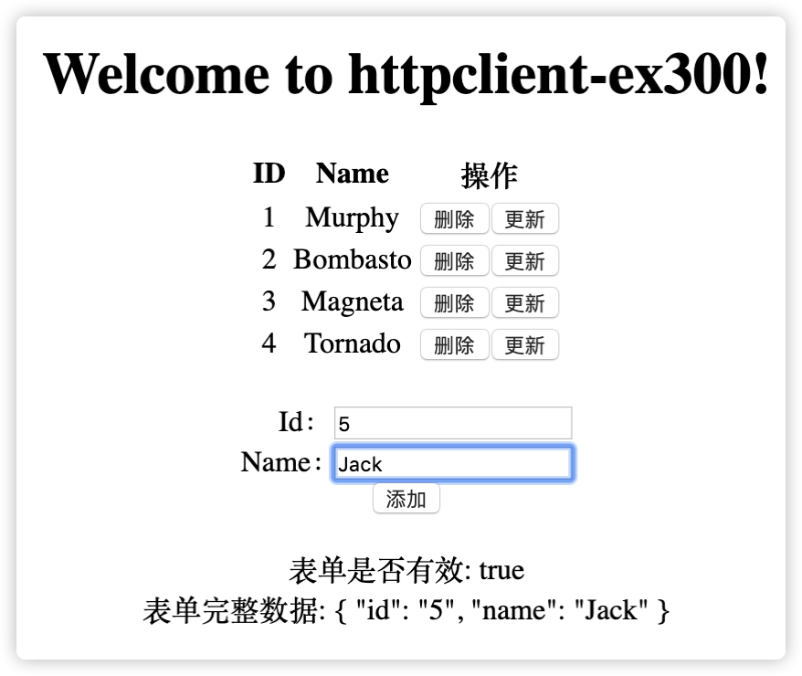
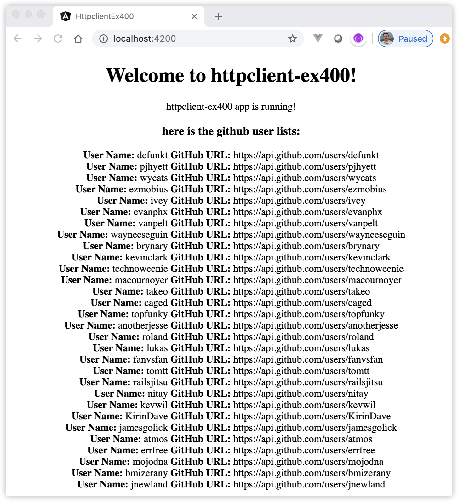

14 熟悉HttpClient模块¶
浏览器现在可以运行复杂的JavaScript Web应用程序，并且大多数时候这些应用程序需要从远程HTTP服务器获取数据以将其显示给用户。现代浏览器支持使用两种不同的 API 发起 HTTP 请求：XMLHttpRequest 接口和 fetch() API。
@angular/common/http 中的 HttpClient 类为 Angular 应用程序提供了一个简化的 API 来实现 HTTP 客户端功能。它基于浏览器提供的 XMLHttpRequest 接口。 HttpClient 带来了很多优点：如可测试性、强类型的请求和响应对象、发起请求与接收响应时的拦截器支持，以及更好的、基于可观察（Observable）对象的 API 以及流式错误处理机制。
本章，我们将了解HttpClientModule在Angular幕后的实际工作方式，并带领读者详细的掌握使用该模块的方法和技巧。
14.1 HTTP协议的简单介绍¶
HttpClient是通过实现HTTP协议客户端功能的，因此，了解HTTP通信的工作方式以及如何为其编写代码非常重要。
超文本传输协议（HTTP）目的在于实现客户端和服务器之间的通信。HTTP用作客户端和服务器之间的请求与响应协议。HTTP方法已经存在了很长时间，它用于传统的服务器端WEB应用程序和客户端AJAX Web应用程序。
HTTP协议基于客户和服务器模式，它的特点主要有下面几个方面：
HTTP协议是无连接的：无连接的含义是限制每次连接只处理一个请求。服务器处理完客户的请求，并收到客户的应答后，即断开连接。采用这种方式可以节省传输时间。
简单快速：客户向服务器请求服务时，只需传送请求方法和路径。请求方法常用的有GET和POST等。每种方法规定了客户与服务器联系的类型不同。由于HTTP协议简单，使得HTTP服务器的程序规模小，因而通信速度很快。
HTTP协议不限制内容：HTTP允许传输任意类型的数据对象。正在传输的类型由Content-Type标识加以标记。
HTTP是无状态：无状态是指协议对于事务处理没有记忆能力。缺少状态意味着如果后续处理需要前面的信息，则它必须重传，这样可能导致每次连接传送的数据量增大。另一方面，在服务器不需要先前信息时它的应答就较快。
14.1.1 介绍HTTP请求¶
客户端使用HTTP协议请求服务器时，客户端向服务器发送的请求内容，我们称之为HTTP请求报文，请求报文由3部分组成：请求行、请求头和请求体：
请求行由请求方法、请求的URL地址、协议名称及版本号组成；
请求头是HTTP的报文头，报文头包含若干个键值对信息，格式为“属性名:属性值”，服务端据此获取客户端的信息；
请求体是报文体，它将一个页面表单中的组件值通过键值对的形式编码成一个格式化后的字符串，它承载多个请求参数的数据。不但报文体可以传递请求参数，请求URL也可以传递请求参数。
每当客户端发送HTTP请求时，它都包含有关请求报文的信息。其中请求行中的请求方法常见的有5种：POST、GET、PUT、PATCH和DELETE。
在程序中，HttpRequest 表示一个HTTP请求，它包括上面介绍的请求报文，内容如 URL、方法、请求头、请求体和其它请求配置项。它的实例都是不可变的。要修改 HttpRequest，应该使用 clone（克隆）方法。
14.1.2 介绍HTTP响应¶
服务器对客户端的请求经过处理后，返回给客户端的内容，我们称之为HTTP响应报文。同样的，响应报文也是由3部分组成：响应行、响应头和响应体：
响应行由协议名称、版本号、状态码及状态描述组成；
响应头，也是由多个属性组成的信息；
响应体即响应报文体，即返回给客户端的内容。
与HTTP请求报文相比，HTTP响应报文多了一个“响应状态码”，它以“清晰明确”的语言告诉客户端本次请求的处理结果。 HTTP的响应状态码以数字开头进行分类的话，可以分为5种：
1xx 消息，一般是告诉客户端，请求已经收到了，正在处理中；
2xx 处理成功，一般表示：请求收悉、服务端明白客户端想要的、请求已受理、已经处理完成等信息；
3xx 重定向到其它地方。它让客户端再发起一个请求以完成整个处理；
4xx 处理发生错误，责任在客户端，如客户端的请求一个不存在的资源，客户端未被授权，禁止访问等；
5xx 处理发生错误，责任在服务端，如服务端抛出异常，路由出错，HTTP版本不支持等。
以下是几个常见的状态码：
200 OK 表示服务端处理成功；
303 See Other 服务端把将请求重置到到其它的页面，目标的URL通过响应报文头的Location属性告知客户端；
304 Not Modified 告诉客户端，上次请求的这个资源至今并没有更改，可以直接用客户端本地的缓存；
404 Not Found 意思是找不到页面。比如在百度上找到一个页面，点击这个链接返回404，表示这个页面已经被网站删除了；
500 Internal Server Error 看到这个错误，应该查查服务端的日志了，肯定抛出了一堆异常。
在程序中，HttpResponse 表示一个HTTP响应，它包括上面介绍的响应报文。它的实例也是不可变的。要修改 HttpResponse，应该使用 clone（克隆） 方法。
14.2 启用HttpClient模块¶
要想使用 HttpClient，就要先导入 Angular 的 HttpClientModule。大多数应用都会在根模块 AppModule 中导入它。
编辑文件src/app/app.module.ts，导入HttpClientModule模块，注意顺序在BrowserModule之后：
import { NgModule } from '@angular/core'; import { BrowserModule } from '@angular/platform-browser'; import { HttpClientModule } from '@angular/common/http'; @NgModule({ imports: [ BrowserModule, HttpClientModule // 导入HttpClientModule模块，注意顺序在BrowserModule之后 ], declarations: [ AppComponent, ], bootstrap: [ AppComponent ] }) export class AppModule {}
在 AppModule 中导入 HttpClientModule 之后，就可以通过构造函数把HttpClient实例注入到类中，就像下面的 DemoService 例子中这样。
import { Injectable } from '@angular/core'; import { HttpClient } from '@angular/common/http'; @Injectable() export class DemoService { constructor(private http: HttpClient) { } // 注入HttpClient实例 }
在应用程序根模块中导入HttpClientModule，将使其在Angular应用程序中的任何地方都可用。也可以将其导入子模块，那么仅能在子模块中使用HttpClient服务。
14.3 创建RestFull API服务¶
HttpClient的本质是从远程HTTP服务器获取数据，因此需要有一个后端数据服务器环境。在这里，我们并不真正的创建一个后端RestFull API数据服务，而是尽可能的把读者的注意力集中在Angular本身，因此，下面介绍3种方法模拟或创建简单的RestFull API服务，稍后会总结使用它们的场景。
14.3.1 使用json-server创建RestFull API服务¶
json-server是一个 Node.js 模块，底层运行在Express服务器上，用户可以指定一个JSON文件作为RestFull API服务的数据源。 使用json-server在本地搭建一个JSON服务器，对外提供 RestFull API 服务。前端开发工程师，在无后端的情况下，可以用它来作为后端 RestFull API 服务器。
14.3.1.2 如何使用json-server¶
具体使用json-server的步骤如下：
新建一个data文件夹，在data文件夹中创建一个db.json的文件，并将其更改为以下内容：
{ "data":[] }
启动json-server，使用如下命令：
cd data json-server db.json控制台输出启动信息：
\{^_^}/ hi! Loading db.json Done Resources http://localhost:3000/data Home http://localhost:3000json-server命令附带了一些参数，比如可以指定端口：–port 3004
上述信息表明我们的json-server服务器已经启动成功。接下来可以通过浏览器或Postman发送请求，获得相应数据。如发送GET请求 http://localhost:3000/data。
增加数据。发送POST请求 http://localhost:3000/data ，请求数据如下：
{ "username":"docedit.cn", "age":3 }返回response 结果:
{ "username": "docedit.cn", "age": 3, "id": 1 }
对数据进行排序和过滤。GET请求中还支持排序和过滤等功能，如，对“age”字段进行升序排序，请求的URL为：http://localhost:3000/data?_sort=age&_order=asc。
除了上面介绍的GET、POST方法外，json-server还支持其他的一些请求操作，如：PUT、PATCH和DELETE操作，详情参照json-server的官方介绍：https://github.com/typicode/json-server。
14.3.2 使用Angular内存数据库模拟服务器¶
上述介绍了依赖json-server创建独立的RestFull API服务，Angular中也提供了类似的模拟RestFull API服务，那就是使用Angular内存数据库模拟服务器。Angular内存数据库基于in-memory-web-api库，该库用于Angular演示和测试的内存中网络API，可模仿RestFull API上的CRUD操作。它拦截了Angular Http和HttpClient请求，这些请求原本会发送到远程服务器，然后将它们重定向到定义的内存数据存储中。可以从下面几个方面理解in-memory-web-api库：
in-memory-web-api库集成在Angular应用中，该库会替换 HttpClient 模块中的 HttpBackend服务，新的服务会模拟 RestFull 风格的后端的行为；
in-memory-web-api仅是拦截了Angular中的HTTP请求，它实际上没有在运行Web服务器。因此我们不能通过浏览器或者其他Angular环境外的工具访问它的REST API资源；
in-memory-web-api库所虚拟的API在内存中，也就意味着当刷新浏览器后，所有的数据都会消失。
使用Angular内存数据库的优势显而易见：无需单独构建和启动测试服务器。
14.3.2.1 安装Angular内存数据库¶
要启用Angular内存数据库，需要先安装它，安装命令如下：
npm i angular-in-memory-web-api -S #等同于 npm install angular-in-memory-web-api --save
安装完成后，查看工程的package.json文件的dependencies节点，里面将会增加一行新的依赖：
"angular-in-memory-web-api": "^0.10.0",
14.3.2.2 创建模拟数据¶
新建一个服务类，该类需要实现InMemoryDbService接口，然后类中至少必须实现接口的createDb()方法，该方法负责创建一个“数据库”的数组对象，例如：
import { InMemoryDbService } from 'angular-in-memory-web-api'; export class InMemHeroService implements InMemoryDbService { createDb() { let heroes = [ { id: 1, name: 'Murphy' }, { id: 2, name: 'Bombasto' }, { id: 3, name: 'Magneta' }, { id: 4, name: 'Tornado' } ]; return {heroes}; } }
上述代码中，创建了一个对象数组，并赋值给变量heroes，heroes中的每一个子对象中有2个属性：id和name。变量名heroes将会默认作为URL中的一部分，id将会作为识别对象的key值。此内存中的服务以REST Web API的方式处理HTTP请求并返回可观察（Observable）类型的Response对象。上述代码中定义API的部分基本URL如下：
GET api/heroes // 获取所有的heroes GET api/heroes/42 // 获取id=42的hero GET api/heroes?name=^j // “^j”是个正则表达式，这里指返回name以“j”或者“J”开头的hero GET api/heroes.json/42 // 忽略“.json”，等同于“api/heroes/42”
14.3.2.3 启用Angular内存数据库¶
在AppModule根模块中使用HttpClientInMemoryWebApiModule注册数据存储服务，然后使用此服务类的forRoot静态方法来注入InMemHeroService类：
import { BrowserModule } from '@angular/platform-browser'; import { NgModule } from '@angular/core'; import { AppComponent } from './app.component'; import { HttpClientModule } from '@angular/common/http'; import { HttpClientInMemoryWebApiModule } from 'angular-in-memory-web-api'; import { InMemHeroService } from './in-mem-hero.service'; @NgModule({ declarations: [ AppComponent ], imports: [ BrowserModule, HttpClientModule, // 导入HttpClientModule模块，注意顺序在BrowserModule之后 HttpClientInMemoryWebApiModule.forRoot(InMemHeroService), // 导入该模块的顺序必须在HttpClientModule模块之后 ], providers: [], bootstrap: [AppComponent] }) export class AppModule { }
注意导入顺序，HttpClientInMemoryWebApiModule模块必须放置在HttpClientModule模块之后。
完成上述步骤后，就可以在在代码中使用Angular内存数据库了。
HttpClientInMemoryWebApiModule.forRoot()方法还提供了一些可选的配置选项帮助用户实现一些配置功能。如默认情况下，此服务向所有数据请求添加500ms延迟以模拟往返延迟的效果，可以通过配置选项参数delay设置自定义时间：
HttpClientInMemoryWebApiModule.forRoot(InMemHeroService, { delay: 0 }) // 无延迟 HttpClientInMemoryWebApiModule.forRoot(InMemHeroService, { delay: 500 }) //延迟500ms
默认情况下，HttpClientInMemoryWebApiModule会拦截所有的HttpClient的请求，在实际工作中，我们可能需要同时使用HttpClient和HttpClientInMemoryWebApiModule，意思是同时访问外部和内存的REST API资源，这时，我们可以通过配置选项passThruUnknownUrl来实现，如：
HttpClientInMemoryWebApiModule.forRoot(InMemHeroService,{ passThruUnknownUrl: true})
关于更多的选项功能，可以查阅官方文档中的InMemoryBackendConfigArgs接口对象，了解更多详情。
14.4 从服务器获取数据¶
HttpClient提供的GET请求方法常用于从服务器“获取”数据，GET请求方法有如下方面的特点：
它是幂等(idempotent)的，意思是发出多个相同的GET请求与发出单个请求具有相同的效果；
它可以保留在浏览器历史记录中；
它可以加入浏览器书签；
它有长度限制；
请求通常使用请求头传递信息，不使用请求体。
请求返回的响应内容作为HTTP请求体返回。
下面是使用HttpClient的GET方法的格式示例：
Observable result$ = this.http.get(this.heroesUrl); // result$的类型是可观察对象类型
get()方法返回可观察对象类型的结果，然后可以使用RxJS对其进行处理。
14.4.1 请求带类型的响应¶
HttpClient允许我们在调用HTTP请求时使用泛型，通过泛型告诉Angular期望从HTTP请求收到的响应类型。响应的类型可以是“any”变量类型（例如：string）、类或接口等。例如，下面的代码执行HttpClient的GET请求，将预期的响应指定为Hero对象的数组：
export class Hero { constructor(public id = 1, public name = '') { } } this.http.get<Hero[]>(this.heroesUrl); // 使用泛型的请求响应
注意
指定响应类型是给 TypeScript 看的声明，这仅是一个构建时检查，并不保证服务器会实际使用此类型的对象进行响应。服务器 API 返回的实际类型是由服务端来保证的。换句话说，可以将Hero类中的属性随意定义。因此，服务器实际返回的对象与类的定义并没有直接关系。
下面通过示例演示如何使用HttpClient从服务器获取数据。
14.4.2 [示例 httpclient-ex100] 演示使用HttpClient的GET方法从服务器获取数据¶
用Angular CLI构建应用程序，具体命令如下：
ng new httpclient-ex100 --minimal --interactive=false
启动服务，具体命令如下：
ng serve
查看应用程序结果。打开Web浏览器并浏览到 “http://localhost:4200”，应该看到文本 “Welcome to httpclient-ex100!”。
安装Angular内存数据库依赖，具体命令如下：
npm i angular-in-memory-web-api -S #等同于 npm install angular-in-memory-web-api --save
新建接口。使用命令
ng g interface hero新建接口，并将文件src/app/hero.ts更改为以下内容：
export interface Hero { id: number; name: string; }
新建服务。使用命令
ng g s inMemHero新建服务，并将文件src/app/in-mem-hero.service.ts更改为以下内容：
import { InMemoryDbService } from 'angular-in-memory-web-api'; export class InMemHeroService implements InMemoryDbService { createDb() { let heroes = [ { id: 1, name: 'Murphy' }, { id: 2, name: 'Bombasto' }, { id: 3, name: 'Magneta' }, { id: 4, name: 'Tornado' } ]; return { heroes }; } }
编辑模块。编辑文件src/app/app.module.ts，并将其更改为以下内容：
import { BrowserModule } from '@angular/platform-browser'; import { NgModule } from '@angular/core'; import { AppComponent } from './app.component'; import { HttpClientModule } from '@angular/common/http'; import { InMemHeroService } from './in-mem-hero.service'; import { HttpClientInMemoryWebApiModule } from 'angular-in-memory-web-api'; @NgModule({ declarations: [ AppComponent ], imports: [ BrowserModule, HttpClientModule, // 导入HttpClientModule模块，注意顺序在BrowserModule之后 HttpClientInMemoryWebApiModule.forRoot(InMemHeroService) // 导入该模块的顺序必须在HttpClientModule模块之后 ], providers: [], bootstrap: [AppComponent] }) export class AppModule { }
编辑组件。编辑文件src/app/app.component.ts，并将其更改为以下内容：
import { Component, OnInit } from '@angular/core'; import { HttpClient } from '@angular/common/http'; import { Observable} from 'rxjs'; import { Hero } from './hero'; @Component({ selector: 'app-root', template: ` <!--The content below is only a placeholder and can be replaced.--> <div style="text-align:center"> <h1> Welcome to {{title}}! </h1> <p *ngFor="let hero of heroes"> {{hero.id}} - {{hero.name}} </p> </div> `, styles: [] }) export class AppComponent implements OnInit { title = 'httpclient-ex100'; heroes: Hero[]; private heroesUrl = 'api/heroes'; // 内存数据库的REST API地址 constructor(private http: HttpClient) { }; ngOnInit() { this.getHeroes().subscribe( data => this.heroes = data ) } getHeroes(): Observable<Hero[]> { return this.http.get<Hero[]>(this.heroesUrl); // 指定响应类型为Hero接口数组 } }
观察应用程序页面，页面显示步骤6中定义的heroes的数据列表信息。
在上面的示例httpclient-ex100中，完成了以下内容：
安装了Angular内存数据库，InMemHeroService类实现了InMemoryDbService接口，并实现了其中createDb()方法，在该方法中构建了一个数组对象；
在根模块AppModule中使用HttpClientInMemoryWebApiModule注册数据存储服务，然后使用此服务类的forRoot静态方法来注入InMemHeroService类；
AppComponent类中通过构造函数注入HttpClient服务实例，然后在getHeroes()方法调用该实例的GET方法获取全部的heroes的信息；
在ngOnInit()方法中订阅getHeroes()方法返回的结果，将返回的数组值赋值给类属性heroes，然后在模板中，使用*ngFor指令遍历heroes，在页面上通过模板表达式输出hero的id和name值。
在步骤8中，示例在HttpClient的get()方法中，通过指定响应类型为Hero接口。如前所述，指定响应类型是给 TypeScript 看的声明，因此在步骤5中，尝试删除Hero接口中的属性，如仅保留一个id，观察应用程序的结果，发现结果不受影响，再次证实，HttpClient的get()方法返回的结果以服务器实际返回的对象为准。
14.5 掌握HttpClient的请求头配置¶
本章开篇对HTTP协议进行了简单的介绍，提到了HTTP请求和响应报文，HttpClient提供了对应的方法设置和维护这些报文，除了上面介绍的GET方法外，下面对其他的一些常用的方法进行介绍。
14.5.1 如何添加请求头¶
HttpClient 方法的最后一个参数可以指定一个可选的的配置对象，通过它可以对请求头进行配置。常见的配置有需要 Content-Type 标头来显式声明请求正文的 MIME 类型，权限认证中的Authorization授权令牌，以及请求中的参数传递等。如下面的代码：
import { HttpHeaders } from '@angular/common/http'; const httpOptions = { headers: new HttpHeaders({ 'Content-Type': 'application/json', 'Authorization': 'my-auth-token' }) };
上述代码中，定义了2个header头配置，Content-Type表示发送请求的内容是JSON格式，Authorization表示权限认证中的令牌值。
接下来，将httpOptions常量传递给HttpClient方法的最后一个参数，如：
getHeroes(): Observable<Hero[]> { return this.http.get<Hero[]>(this.heroesUrl, httpOptions); }
注意，HttpHeaders 类的实例一旦配置后，就是只读的，不可变的。
HttpClient的get()方法的完整定义如下：
get<T>(url: string, options?: { headers?: HttpHeaders | { [header: string]: string | string[]; }; observe?: 'body'; params?: HttpParams | { [param: string]: string | string[]; }; reportProgress?: boolean; responseType?: 'json'; withCredentials?: boolean; }): Observable<T>;
从定义中可以看到：get()方法的最后一个参数其实是一个option？（可选的）对象。上面介绍了headers选项的知识，下面来介绍下observe选项和params选项的知识。
14.5.2 如何读取完整的响应体¶
在实际工作中，有时间访问服务器，需要读取它返回的一个特殊的响应头或状态码，因此可能想要完整的响应信息，而不仅只有响应体。在HttpClient的GET方法中可以通过 observe 选项来告诉 HttpClient，希望服务器返回完整的响应信息，例如如下代码：
getHeroes(): Observable<HttpResponse<Hero[]>> { return this.http.get<Hero[]>(this.heroesUrl, { observe: 'response' }); }
上述代码中，在get()方法中，通过附加一个 { observe: ‘response’ } 对象来申请服务器返回完整的响应信息，现在get()方法会返回一个 HttpResponse 类型的 Observable，而不只是 JSON 数据。例如如下代码：
this.getHeroes().subscribe( response => { const keys = response.headers.keys(); // 获取headers信息 keys.map(key => console.log(`${key}: ${response.headers.get(key)}`)); // 位置1 this.heroes = { ...response.body }; console.log(JSON.stringify(this.heroes)) // 位置2 } )
执行上述代码后，位置1处将会在控制台打印出以下内容：
Content-Type: application/json
位置2处将会在控制台打印出以下内容：
{"0":{"id":1,"name":"Murphy"},"1":{"id":2,"name":"Bombasto"},"2":{"id":3,"name":"Magneta"},"3":{"id":4,"name":"Tornado"}}
14.5.3 如何配置请求参数¶
在实际工作中，查询时，通过URL添加参数是常见的应用，下面演示如何使用 HttpParams 类在 HttpRequest 中添加 URL 查询字符串。
首先要导入 HttpParams 类。
import {HttpParams} from "@angular/common/http";
然后在方法中使用HttpParams类构建查询参数：
searchHeroes(key: string): Observable<Hero[]> { key = key.trim(); // 去掉key的空格 // 添加安全检查，如果key不为空，则创建一个HttpParams 类的实例对象，并设置一个name属性 const options = key ? { params: new HttpParams().set('name', key) } : {}; return this.http.get<Hero[]>(this.heroesUrl, options); }
如果需要定义多个属性值的话，可以使用 HttpParams 类的 append()方法，如下面的代码片段：
new HttpParams() .append('action', 'opensearch') .append('search', 'key') .append('format', 'json');
也可以使用 fromString 变量直接从查询字符串创建 HttpParams 参数：
new HttpParams({ fromString: 'action=opensearch&search=key&format=json'});
14.5.4 如何修改请求头¶
上面讲过，因为 HttpHeaders 类的实例是不可变的，所以无法直接修改前述配置对象中的请求头，HttpHeaders类的headers实例提供了一个set()方法来实现修改请求头，set()方法首先会克隆一个当前的请求头，然后重新设置新的属性值，如实际工作中，如果旧的令牌已经过期了，可能还要修改认证头：
httpOptions.headers = httpOptions.headers.set('Authorization', 'my-new-auth-token');
注意set()方法里面包含了clone(克隆)方法，在本章的后续部分会详细的介绍clone(克隆)方法。
14.5.5 发起 JSONP 请求¶
1995年由Netscape公司提出同源策略，浏览器在发送Ajax请求时，只接收同域服务器响应的数据资源；所谓同域，简单的理解就是：协议、域名、端口全部相同才算同一域下，三个条件有一个不一致，都不算同域，既跨域。即使是同一个域名服务器，而二级域名或三级域名不一致，也会出现跨域，如：http://img.company.com 与 http://blog.company.com 之间需要数据交互，就跨域了。
跨域资源共享(CORS) 是一种机制，跨域资源共享（ CORS ）机制允许 Web 应用服务器进行跨域访问控制，从而使跨域数据传输得以安全进行。当服务器不支持跨域资源共享(CORS)协议时，JSONP 是目前应用最为广泛的技术解决方案。
CORS与JSONP的使用目的相同，但是比JSONP更强大。JSONP只支持GET请求，CORS支持所有类型的HTTP请求。JSONP的优势在于支持老式浏览器，以及可以向不支持CORS的网站请求数据。JSONP是利用了 script 标签的 src 属性来实现跨域数据交互的，因为浏览器解析HTML代码时，原生具有src属性的标签，浏览器都赋予其HTTP请求的能力，而且不受跨域限制，使用src发送HTTP请求，服务器直接返回一段JS代码的函数调用，将服务器数据放在函数实参中，前端提前写好响应的函数准备回调，接收数据，实现跨域数据交互。
下面通过示例演示CORS与JSONP的使用，示例演示了通过维基百科（中国）的API查询关键字“China”的实际场景。
14.5.6 [示例 httpclient-ex200] 演示通过维基百科（中国）的API搜索关键字信息的实际场景¶
用Angular CLI构建应用程序，具体命令如下：
ng new httpclient-ex200 --minimal --interactive=false
启动服务，具体命令如下：
ng serve
查看应用程序结果。打开Web浏览器并浏览到 “http://localhost:4200”，应该看到文本 “Welcome to httpclient-ex200!”。
编辑模块。编辑文件src/app/app.module.ts，并将其更改为以下内容：
import { BrowserModule } from '@angular/platform-browser'; import { NgModule } from '@angular/core'; import { AppComponent } from './app.component'; import { HttpClientModule } from '@angular/common/http'; @NgModule({ declarations: [ AppComponent ], imports: [ BrowserModule, HttpClientModule ], providers: [], bootstrap: [AppComponent] }) export class AppModule { }
编辑组件。编辑文件src/app/app.component.ts，并将其更改为以下内容：
import { Component, OnInit } from '@angular/core'; import { HttpClient, HttpParams } from '@angular/common/http'; @Component({ selector: 'app-root', template: ` <div style="text-align:center"> <h1> Welcome to {{title}}! </h1> <span style="display: block">{{ title }} app is running!</span> </div> `, styles: [] }) export class AppComponent implements OnInit{ title = 'httpclient-ex200'; constructor(private http: HttpClient) {}; // 注入HttpClient ngOnInit() { this.getData("China"); // 调用方法查询关键字“China” } getData(search: string) { const WIKIPEDIA_URL = "https://zh.wikipedia.org/w/api.php"; // 维基百科（中国）的地址 const url = this.searchUrl(search, WIKIPEDIA_URL); console.log("访问的URL： " + url) return this.http.get(url) // 调用get()方法发起请求 .subscribe( // 订阅返回的结果 results => { console.log("获得的数据： " + results) }); } // 通过方法拼接查询参数 searchUrl(term: string, base: string) { let params = new HttpParams() .append('action', 'opensearch') .append('search', encodeURIComponent(term)) .append('format', 'json'); return `${base}?${params.toString()}`; } }
观察应用程序页面，页面显示正常，但是进入开发者模式，发现已经产生了错误。错误信息如下：
Access to XMLHttpRequest at 'https://zh.wikipedia.org/w/api.php?action=opensearch&search=China&format=json' from origin 'http://localhost:4200' has been blocked by CORS policy: No 'Access-Control-Allow-Origin' header is present on the requested resource. zh.wikipedia.org/w/api.php?action=opensearch&search=China&format=json:1 Failed to load resource: net::ERR_FAILED core.js:6185 ERROR HttpErrorResponse
在上面的示例httpclient-ex200中，完成了以下内容：
启用了HttpClientModule模块；
AppComponent类中通过构造函数注入HttpClient服务实例，然后在getData()方法调用该实例的GET方法访问维基百科（中国）的信息；
在ngOnInit()方法中调用getData()方法；
查看页面控制台中的错误信息内容，提示应用试图访问跨域资源的请求，被浏览器拦截。
下面将演示通过HttpClient 跨域发出 JSONP 请求，解决上述跨域问题。
在 Angular 中，通过在 NgModule 的 imports 中包含 HttpClientJsonpModule模块来发出 JSONP 请求。使用方法与HttpClientModule类似，还是以[示例 httpclient-ex200]为基础：
编辑模块。编辑文件src/app/app.module.ts，并将其更改为以下内容：
import { BrowserModule } from '@angular/platform-browser'; import { NgModule } from '@angular/core'; import { AppComponent } from './app.component'; import { HttpClientModule, HttpClientJsonpModule } from '@angular/common/http'; @NgModule({ declarations: [ AppComponent ], imports: [ BrowserModule, HttpClientModule, HttpClientJsonpModule ], providers: [], bootstrap: [AppComponent] }) export class AppModule { }
编辑组件。编辑文件src/app/app.component.ts，并将其更改为以下内容：
export class AppComponent implements OnInit { constructor(private http: HttpClient) {}; // 注入HttpClient ngOnInit() { this.getData("China"); // 调用方法查询关键字“China” } getData(search: string) { const WIKIPEDIA_URL = "https://zh.wikipedia.org/w/api.php"; // 维基百科中国的地址 const url = this.searchUrl(search, WIKIPEDIA_URL); console.log("访问的URL： " + url) return this.http.jsonp(url, 'callback') // 调用jsonp()方法发起请求 .subscribe( // 订阅返回的结果 results => { console.log("获得的数据： " + results) }); } // 通过方法拼接查询参数 searchUrl(term: string, base: string) { let params = new HttpParams() .append('action', 'opensearch') .append('search', encodeURIComponent(term)) .append('format', 'json'); return `${base}?${params.toString()}`; } }
观察应用程序页面，页面显示正常，进入开发者模式，发现控制台打印出结果信息。
上述代码演示了通过维基百科中国查询关键字“China”的应用片段，代码中完成了以下内容：
启用了HttpClientModule和HttpClientJsonpModule模块；
AppComponent类中通过构造函数注入HttpClient服务实例，然后在getData()方法调用该实例的jsonp()方法访问维基百科（中国）的API。HttpClient的jsonp()方法中，第一个参数是请求的URL地址，第二个参数是回调函数的名称，这里的“callback”名称在后端代码中是默认固定好的；
在ngOnInit()方法中调用getData()方法；
14.5.7 请求非 JSON 数据¶
不是所有的 API 都会返回 JSON 数据。有时候会从服务器读取文本文件，并把文件的内容记录下来，然后把这些内容使用 Observable<string> 的形式返回给调用者。可以通过在HttpClient提供的GET方法中配置responseType选项来指定获取响应内容的类型，如：
this.http.get(filename, {responseType: 'text'}) .pipe( tap( data => console.log(filename, data) ) );
上述代码中由于 responseType 选项是 ‘text’，因此 HttpClient.get() 返回字符串而不是默认的 JSON 对象。
14.6 HttpClient与RxJS配合¶
RxJS是一个基于可观测数据流在异步编程应用中的库，它是可观察对象的Javascript实现，Angular中完全集成RxJS响应式编程库。HttpClient从服务器获取数据返回的是可观察（Observable）类型的Response对象，而RxJS库提供了各种操作符用来处理可观察（Observable）对象，两者结合使用可谓是强强联合。本章的示例中将会涉及到大量的使用RxJS操作符的用法，且本书的后续章节将会详细的讲解在Angular中更加紧密的使用RxJS。
14.6.1 错误处理¶
在系统交互过程中，难免会因为网络延时、服务器端故障或其他等客观问题的存在，导致系统发生不可避免的错误，如何有效的的处理错误，是系统必不可少的设计组成部分。
调用HttpClient的方法，返回可观察（Observable）类型的对象，可以通过在可观察对象的订阅方法中添加应对错误处理的逻辑。如下面的代码：
this.getHeroes().subscribe( data => this.heroes = data, err => console.log('error:', err), // 当有异常发生时 )
虽然上面的方法能解决错误信息的处理，但是实际应用中，错误的类型有好几类，比如有应用代码运行时发生的错误，有服务器资源不存在或者失效的错误，还有来自业务层面的提示错误，如权限问题等。而且错误的探查、解释和解决是应该在服务中做的事情，而不是在组件中。因此，需要一种统一处理错误的设计思路，比如在项目的固定位置集中处理等。
RxJS提供了解决方案，它使用管道将由 HttpClient 方法返回的可观察（Observable）对象传给错误处理器。如下面的代码：
getHeroes() { return this.http.get<Hero[]>(this.heroesUrl) .pipe( catchError(this.handleError) // 错误处理 ); }
上述代码中的handleError()方法就是我们刚提到的集中处理错误的代码，如：
private handleError(error: HttpErrorResponse) { if (error.error instanceof ErrorEvent) { // 代码运行错误或网络错误 console.error('发生了错误：', error.error.message); } else { // 服务端发生了错误，返回了一个不成功的响应代码 console.error( `错误码是：${error.status}, ` + `错误信息：${error.error}`); } // 创建一个可观察（Observable）对象类型的友好错误信息，并通知用户 return throwError( '系统发生了错误，请稍后再试'); };
上述代码仅是通过示例演示如果处理错误，在实际应用中，可能不仅仅是在控制台打印错误信息，还需要更进一步的对错误进行处理。
14.6.2 重试¶
有时错误是暂时性的，如果再试一次就会自动消失。比如，在实际应用中可能会遇到网络中断的情况，只要重试一下就能拿到正确的结果。
RxJS 库提供了几个 retry 操作符，它可以对失败的可观察（Observable）对象自动重新订阅几次，其中最简单的是retry()操作符。对调用 HttpClient 方法返回的结果进行重新订阅会导致重新发起 HTTP 请求。
把retry()操作符放在错误处理器的前面。
getHeroes() { return this.http.get<Hero[]>(this.heroesUrl) .pipe( retry(3), // 重试失败的请求，最多可重试3次 catchError(this.handleError) // 错误处理 ); }
关于更多的RxJS知识，读者可以翻到本书的前面章节进行详细的了解。
14.7 把数据发送到服务器¶
除了从服务器获取数据之外，HttpClient 还支持POST、DELETE和PUT这样的修改型的请求，也就是说，可以通过这些方法将数据发送到服务器。
14.7.1 发起 POST 请求¶
HttpClient提供的POST方法常用于将数据发布到服务器。POST请求有如下方面的特点：
它不是幂等(idempotent)的，意思是多次调用相同的POST请求与调用一次的效果不同；
它无法缓存；
它不能保留在浏览器历史记录中；
它无法加入书签中；
发送内容没有长度限制；
内容通过使用HTTP请求体发送；
响应通过使用HTTP响应体返回。
由于POST请求不是幂等的，如果重复提交多次的话，将会发布多次数据到服务器上。典型的副作用就是多次提交表单，导致重复添加记录。 以下是使用HttpClient的POST请求方法的格式示例：
addHero(hero: Hero): Observable<Hero> { const httpOptions = { headers: new HttpHeaders({ 'Content-Type': 'application/json', }) }; return this.http.post<Hero>(this.heroesUrl, hero, httpOptions) .pipe( catchError(this.handleError) ); }
14.7.2 发起 DELETE 请求¶
HttpClient提供的DELETE方法用于从服务器中删除资源。DELETE请求有如下方面的特点：
它不是幂等(idempotent)的，意思是多次调用相同的DELETE请求与调用一次的效果不同；
它无法缓存；
内容通过HTTP请求头发送；
响应通过HTTP响应体返回。
使用HttpClient的DELETE请求方法的格式示例：
deleteHero(hero: Hero | number): Observable<Hero> { const id = typeof hero === 'number' ? hero : hero.id; const url = `${this.heroesUrl}/${id}`; return this.http.delete<Hero>(url, this.httpOptions).pipe( catchError(this.handleError<any>('deleteHero', hero)) ); }
14.7.3 发起 PUT 请求¶
HttpClient提供的PUT方法类似于POST方法，用于从更新服务器中的资源。PUT请求有如下方面的特点：
它是幂等(idempotent)的，意思是多次调用相同的PUT请求与调用一次的效果相同；
它无法缓存；
它不能保留在浏览器历史记录中；
它无法加入书签中；
发送内容没有长度限制；
内容通过使用HTTP请求体发送；
响应通过使用HTTP响应体返回。
使用HttpClient的PUT请求方法的格式示例：
updateHero(hero: Hero): Observable<Hero> { return this.http.put<Hero>(this.heroesUrl, hero, this.httpOptions) .pipe( catchError(this.handleError('updateHero', hero)) ); }
下面通过示例演示如何使用HttpClient把数据发送到服务器，并对数据进行CRUD操作，我们还是使用Angular内存数据库模拟服务器。
14.7.4 [示例 httpclient-ex300] 演示HttpClient方法的使用¶
用Angular CLI构建应用程序，具体命令如下：
ng new httpclient-ex300 --minimal --interactive=false
启动服务，具体命令如下：
ng serve
查看应用程序结果。打开Web浏览器并浏览到 “http://localhost:4200”，应该看到文本 “Welcome to httpclient-ex300!”。
安装Angular内存数据库依赖，具体命令如下：
npm i angular-in-memory-web-api -S #等同于 npm install angular-in-memory-web-api --save
新建接口。使用命令
ng g interface hero新建接口，并将文件src/app/hero.ts更改为以下内容：
export interface Hero { id: number; name: string; }
新建服务。使用命令
ng g s inMemHero新建服务，并将文件src/app/in-mem-hero.service.ts更改为以下内容：
import { InMemoryDbService } from 'angular-in-memory-web-api'; export class InMemHeroService implements InMemoryDbService { createDb() { let heroes = [ { id: 1, name: 'Murphy' }, { id: 2, name: 'Bombasto' }, { id: 3, name: 'Magneta' }, { id: 4, name: 'Tornado' } ]; return { heroes }; } }
编辑模块。编辑文件src/app/app.module.ts，并将其更改为以下内容：
import { BrowserModule } from '@angular/platform-browser'; import { NgModule } from '@angular/core'; import { AppComponent } from './app.component'; import { ReactiveFormsModule } from '@angular/forms'; import { HttpClientModule } from '@angular/common/http'; import { InMemHeroService } from './in-mem-hero.service'; import { HttpClientInMemoryWebApiModule } from 'angular-in-memory-web-api'; @NgModule({ declarations: [ AppComponent ], imports: [ BrowserModule, ReactiveFormsModule, HttpClientModule, // 导入HttpClientModule模块，注意顺序在BrowserModule之后 // 导入该模块的顺序必须在HttpClientModule模块之后 HttpClientInMemoryWebApiModule.forRoot(InMemHeroService) ], providers: [], bootstrap: [AppComponent] }) export class AppModule { }
新建服务。使用命令
ng g s hero新建服务，并将文件src/app/hero.service.ts更改为以下内容：
import { Injectable } from '@angular/core'; import { HttpClient, HttpErrorResponse, HttpHeaders } from '@angular/common/http'; import { Observable, throwError, of } from 'rxjs'; import { Hero } from './hero'; import { catchError, tap } from 'rxjs/operators'; @Injectable({ providedIn: 'root' }) export class HeroService { constructor(private http: HttpClient) { } private heroesUrl = 'api/heroes'; // 内存数据库的REST API地址 httpOptions = { headers: new HttpHeaders({ 'Content-Type': 'application/json' }) }; getHeroes(): Observable<Hero[]> { return this.http.get<Hero[]>(this.heroesUrl) .pipe( tap(_ => console.log('fetched heroes')), catchError(this.handleError) ); } addHero(hero: Hero): Observable<Hero> { return this.http.post<Hero>(this.heroesUrl, hero, this.httpOptions).pipe( tap((newHero: Hero) => console.log(`添加 hero w/ id=${newHero.id}`)), catchError(this.handleError<Hero>('addHero')) ); } deleteHero(hero: Hero | number): Observable<Hero> { const id = typeof hero === 'number' ? hero : hero.id; const url = `${this.heroesUrl}/${id}`; return this.http.delete<Hero>(url, this.httpOptions).pipe( tap(_ => console.log(`删除 hero id=${id}`)), catchError(this.handleError<any>('deleteHero', hero)) ); } updateHero(hero: Hero): Observable<Hero> { hero.name = hero.name + (hero.id + 1) return this.http.put<Hero>(this.heroesUrl, hero, this.httpOptions) .pipe( tap(_ => console.log(`更新 hero id=${hero.id}`)), catchError(this.handleError('updateHero', hero)) ); } private handleError<T>(operation = 'operation', result?: T) { return (error: any): Observable<T> => { console.log(`${operation} failed: ${error.message}`); return of(result as T); // 返回一个可观察对象 }; } }
编辑组件。编辑文件src/app/app.component.ts，并将其更改为以下内容：
import { Component } from '@angular/core'; import { Hero } from './hero'; import { FormBuilder, FormGroup, Validators } from '@angular/forms'; import { HeroService } from './hero.service'; @Component({ selector: 'app-root', template: ` <div style="text-align:center"> <h1> Welcome to {{title}}! </h1> <table align="center"> <tr> <th>ID</th> <th>Name</th> <th>操作</th> </tr> <tr *ngFor="let hero of heroes" > <td>{{ hero.id }}</td> <td>{{ hero.name }}</td> <td> <button (click)="deleteHero(hero.id)">删除</button> <button (click)="updateHero(hero)">更新</button> </td> </tr> </table> <br> <form [formGroup]="formGroup" (ngSubmit)="onSubmit()"> <div class="block"> <label>Id：</label> <input formControlName="id"> </div> <div class="block"> <label>Name：</label> <input formControlName="name"> </div> <input type="submit" value="添加" [disabled]="!formGroup.valid"> <br><br> 表单是否有效: {{ formGroup.valid }} <br> 表单完整数据: {{ formGroup.value | json }} </form> </div> `, styles: [` .block label { display: inline-block; width: 50px; text-align: right; } `] }) export class AppComponent { title = 'httpclient-ex300'; heroes: Hero[]; formGroup: FormGroup; constructor(private heroService: HeroService, private fb: FormBuilder) { }; ngOnInit() { this.getHeroes(); this.formGroup = this.fb.group({ // 初始化表单 id: this.fb.control('', Validators.required), name: this.fb.control('', Validators.required) }); } getHeroes() { this.heroService.getHeroes().subscribe( data => this.heroes = data ) } updateHero(hero: Hero) { this.heroService.updateHero(hero).subscribe((data) => { console.log("Hero updated: ", data); this.getHeroes(); }) } deleteHero(id: number) { this.heroService.deleteHero(id).subscribe((data) => { console.log("Hero deleted: ", data); this.getHeroes(); }) } onSubmit() { const hero = this.formGroup.value; hero.id = Number(hero.id); // 页面返回的是字符型id，这里需要转换为数值值 this.heroService.addHero(hero).subscribe( hero => { if (hero) { this.getHeroes(); } else { alert('发生了错误！') } this.formGroup.reset(); } ); } }
观察应用程序页面，页面显示效果如图14-1所示。
图14-1 演示提交表单数据到服务器
{kind=link}
在上面的示例httpclient-ex300中，完成了以下内容：
启用了Angular内存数据库。InMemHeroService类实现了InMemoryDbService接口，并实现了其中createDb()方法，在该方法中构建了一个数组对象。在根模块AppModule中使用HttpClientInMemoryWebApiModule注册数据存储服务，然后使用此服务类的forRoot静态方法来注入InMemHeroService类；
新建了一个HeroService服务类，该类通过构造函数注入HttpClient服务实例，在服务类中分别实现了与Angular内存数据库交互CRUD操作，其中还定义了一个handleError错误处理方法；
AppComponent类模板中构建了一个响应式表单，组件类中通过构造函数注入HeroService服务实例，然后分别在对应的方法中调用HeroService的服务；
示例运行时，页面初始化时完成数据的获取工作，数据结果显示在页面上；可以点击页面上的删除和更新按钮对数据进行删除和更新操作；如图14-1所示，可以在输入框中输入数据，点击添加按钮将数据发送到服务器，数据保存成功后，页面上的记录列表更新为新的数据集；如果添加已经存在的ID值，页面上会弹出提示框提示数据保存错误。
14.8 深入掌握HTTP的请求和响应的不变性¶
上面章节中提到，HttpRequest 和 HttpResponse 实例的属性都是只读（readonly）的，但是在实际工作中，往往需要对它们进行定制化的操作，下面介绍具体操作的方法。
14.8.1 理解HTTP的请求体和克隆体¶
由于HttpRequest 和 HttpResponse 实例的属性都是只读（readonly）的，要想修改它们，就要先克隆它，并修改这个克隆体，然后利用克隆体发送请求。例如下面的代码：
request.url = request.url.replace('http://', 'https://'); // 将url中的字符串'http://'替换为'https://'
上述代码试图修改HttpRequest实例中的url属性的值，TypeScript将会提示错误信息，这是不允许的操作。
凡事都没有绝对性，readonly 这种赋值保护，无法防范深修改（修改子对象的属性），也不能防范修改请求体对象中的属性。例如下面的代码：
request.body.name = request.body.name.trim(); // 去掉请求体中的name属性值中的空格，不推荐的操作
上述代码，试图修改请求体中的name属性的值，虽然代码上可行，但是不推荐这样的操作。正确的做法是先克隆它，并修改这个克隆体，然后利用克隆体发送请求。例如下面的代码：
const newBody = { ...body, name: body.name.trim() }; // 去掉请求体中的name属性值中的空格 const newReq = req.clone({ body: newBody }); // clone()方法中完成：克隆请求体，并将其设置为新的请求体， return next.handle(newReq); // 用新的请求体发送请求
上述代码来自拦截器中的代码片段，有关拦截器的知识，下面章节会进行详细的介绍。
14.8.2 如何清空请求体¶
有时需要清空请求体，而不是替换它。如果把克隆后的请求体设置成 undefined，Angular 会坚持让这个请求体保持原样。如果把克隆后的请求体设置成 null，Angular 就执行清空这个请求体的操作。请看下面的代码：
newReq = request.clone({ ... }); // 正常的克隆操作，使用新的请求体 newReq = request.clone({ body: undefined }); // 使用原先的请求体 newReq = request.clone({ body: null }); // 清空请求体
14.9 学习使用Angular的拦截器¶
Angular中的拦截器(HttpInterceptor)提供了一种拦截HTTP请求和响应的方法，可以使用它来监视和转换HTTP请求和响应。 拦截器使用一种常规的、标准的方式对每一次 HTTP 的请求和响应任务执行譬如认证、添加请求参数和记日志等很多种隐式任务。 如果没有拦截机制，那么开发人员将不得不对每次 HttpClient 的调用显式的实现这些任务。
14.9.1 创建拦截器¶
要实现拦截器，就要创建一个实现了 HttpInterceptor 接口的类，并实现该接口中的 intercept() 方法。使用如下的Angular CLI命令创建拦截器：
ng generate interceptor <name> # 可以简写为：ng g interceptor <name>
假如，我们创建一个拦截器，在这个拦截器中仅打印一行日志。使用命令如下：
ng g interceptor my
上述命令将会创建名为MyInterceptor的拦截器，编辑文件src/app/my.interceptor.ts，并将其更改为以下内容：
import { Injectable } from '@angular/core'; import { HttpRequest, HttpHandler, HttpEvent, HttpInterceptor } from '@angular/common/http'; import { Observable } from 'rxjs'; @Injectable() export class MyInterceptor implements HttpInterceptor { constructor() {} intercept(request: HttpRequest<unknown>, next: HttpHandler): Observable<HttpEvent<unknown>> { console.log(JSON.stringify(request)); // 打印请求信息 return next.handle(request); } }
HttpInterceptor接口里的intercept()方法中有2个参数，request是HttpRequest类型的请求对象实例，next是HttpHandler类型的对象，next对象表示拦截器链表中的下一个拦截器。如果有多个拦截器，那么最后一个拦截器中的next对象代表着 HttpClient 的后端处理器。大多数的拦截器都会调用 next.handle()，以便这个请求流能走到下一个拦截器，并最终传给后端处理器。 拦截器也可以不调用 next.handle()，比如让拦截链短路，并返回一个带有自定义的Observable<HttpEvent<unknown>>类型的结果对象。unknown是TypeScript在版本3.0中引入的基本类型，它表示未知类型，unknown与any类型的最大不同之处在于：unknown类型虽然未知，但是还是需要进行类型检查，而any类型是告知TypeScript不需要做类型检查。
14.9.2 配置拦截器提供商¶
在Angular中配置提供商后，应用程序就可以使用提供商来配置注入器（Injector），注入器负责提供依赖注入服务，进而Angular应用程序就能使用到注入服务了。因此，在创建了拦截器后，我们还需要进一步配置拦截器提供商。
由于拦截器是 HttpClient 服务的（可选）依赖，所以必须在提供 HttpClient 的同一个（或其各级父注入器）注入器中提供这些拦截器。我们在 AppModule 中导入了 HttpClientModule，导致本应用在其根注入器中提供了 HttpClient。所以也同样要在 AppModule 中提供这些拦截器。配置拦截器提供商的注册语句格式如下：
@NgModule({ providers: [{ provide: HTTP_INTERCEPTORS, useClass: MyInterceptor, multi: true }], })
在上述代码中，我们在@NgModule元数据的providers选项里面配置拦截器提供商。其中provide选项的值HTTP_INTERCEPTORS常量来自@angular/common/http包，useClass选项的值是我们创建的拦截器，multi选项值为true，表示当前注入的是一个数组的值，而不是单一的值。multi选项默认值为true。如果在应用中仅配置一个拦截器提供商，那么我们也可以直接这么写：
@NgModule({ providers: [MyInterceptor], })
下面，我们通过示例演示拦截器的基本用法。
14.9.3 [示例 httpclient-ex400] 配置日志和错误信息的拦截器¶
用Angular CLI构建应用程序，具体命令如下：
ng new httpclient-ex400 --minimal --interactive=false
启动服务，具体命令如下：
ng serve
查看应用程序结果。打开Web浏览器并浏览到 “http://localhost:4200”，应该看到文本 “Welcome to httpclient-ex400!”。
新建日志拦截器。使用命令 ng g interceptor log 新建LogInterceptor拦截器，并将文件src/app/log.interceptor.ts更改为以下内容：
import { Injectable } from '@angular/core'; import { HttpRequest, HttpHandler, HttpEvent, HttpInterceptor, HttpResponse } from '@angular/common/http'; import { Observable } from 'rxjs'; import { tap, finalize } from 'rxjs/operators'; @Injectable() export class LogInterceptor implements HttpInterceptor { constructor() { } intercept(request: HttpRequest<unknown>, next: HttpHandler): Observable<HttpEvent<unknown>> { const started = Date.now(); let ok: string; return next.handle(request) .pipe( tap( // 正常返回是HttpResponse类型对象 event => { console.log('进入了Log拦截器！') ok = event instanceof HttpResponse ? 'succeeded' : '' }, // 错误时返回HttpErrorResponse类型对象 error => ok = 'failed' ), // 当HTTP方法调用完成或者有错误发生时执行下面的逻辑 finalize(() => { const elapsed = Date.now() - started; const msg = `${request.method} "${request.urlWithParams}" ${ok} in ${elapsed} ms.`; console.log('Log拦截器 ' + msg); // 打印请求信息 }) ); } }
新建Error信息拦截器。使用命令 ng g interceptor error 新建ErrorInterceptor拦截器，并将文件src/app/error.interceptor.ts更改为以下内容：
import { Injectable } from '@angular/core'; import { HttpRequest, HttpHandler, HttpEvent, HttpInterceptor } from '@angular/common/http'; import { Observable, throwError } from 'rxjs'; import { catchError, tap } from 'rxjs/operators'; @Injectable() export class ErrorInterceptor implements HttpInterceptor { constructor() { } intercept(request: HttpRequest<unknown>, next: HttpHandler): Observable<HttpEvent<unknown>> { return next.handle(request).pipe( tap( data => console.log('没有发生错误！')), catchError(err => { if (err.status === 401) { console.error('发生了 401 错误！'); } const error = err.error.message || err.statusText; return throwError(error); })) } }
编辑模块。编辑文件src/app/app.module.ts，并将其更改为以下内容：
import { BrowserModule } from '@angular/platform-browser'; import { NgModule } from '@angular/core'; import { AppComponent } from './app.component'; import { HTTP_INTERCEPTORS } from '@angular/common/http'; import { LogInterceptor } from './log.interceptor'; import { HttpClientModule } from '@angular/common/http'; import { ErrorInterceptor } from './error.interceptor'; @NgModule({ declarations: [ AppComponent ], imports: [ BrowserModule, HttpClientModule ], providers: [ { provide: HTTP_INTERCEPTORS, useClass: ErrorInterceptor, multi: true },// 配置error拦截器提供商 { provide: HTTP_INTERCEPTORS, useClass: LogInterceptor, multi: true } // 配置log拦截器提供商 ], bootstrap: [AppComponent] }) export class AppModule { }
新建接口。使用命令
ng g interface user新建接口，并将文件src/app/user.ts更改为以下内容：
export interface User { login: string; url: string }
新建服务。使用命令
ng g s github新建GithubService服务类，并将文件src/app/github.service.ts更改为以下内容：
import { Injectable } from '@angular/core'; import { HttpClient } from '@angular/common/http'; import { Observable } from 'rxjs'; import { User } from './user'; @Injectable({ providedIn: 'root' }) export class GithubService { private usersUrl = 'https://api.github.com/users?since=1'; // Github user 的REST API地址 constructor(private http: HttpClient) { } getUsers(): Observable<User[]> { return this.http.get<User[]>(this.usersUrl); } }
编辑组件。编辑文件src/app/app.component.ts，并将其更改为以下内容：
import { Component, OnInit } from '@angular/core'; import { GithubService } from './github.service'; import { Observable } from 'rxjs'; import { User } from './user'; @Component({ selector: 'app-root', template: ` <div style="text-align:center"> <h1> Welcome to {{title}}! </h1> <span style="display: block">{{ title }} app is running!</span> <h3>here is the github user lists:</h3> <div *ngFor="let user of users$ |async"> <strong>User Name:</strong> {{ user.login }} <strong>GitHub URL:</strong> {{ user.url }} </div> </div> `, styles: [] }) export class AppComponent implements OnInit { title = 'httpclient-ex400'; constructor(private githubService: GithubService) { }; // 注入GithubService users$: Observable<Array<User>>; ngOnInit() { this.users$ = this.githubService.getUsers() } }
观察应用程序页面，页面显示效果如图14-2所示。
图14-2 访问Github的API接口返回信息
{kind=link}
进入页面开发者模式，控制台打印信息如下：
Navigated to http://localhost:4200/ log.interceptor.ts:26 进入了Log拦截器！ error.interceptor.ts:18 没有发生错误！ core.js:40480 Angular is running in the development mode. Call enableProdMode() to enable the production mode. [WDS] Live Reloading enabled. log.interceptor.ts:26 进入了Log拦截器！ error.interceptor.ts:18 没有发生错误！ log.interceptor.ts:37 Log拦截器 GET "https://api.github.com/users?since=1" succeeded in 1746 ms.
在上面的示例httpclient-ex400中，完成了以下内容：
创建了LogInterceptor拦截器，该拦截器的作用是记录HTTP方法执行的时间。在next.handle()方法中首先根据返回对象的类型判断是正常还是有错误发生，然后使用finalize操作符在HTTP方法调用完成或者有错误发生时打印日志信息；
创建了ErrorInterceptor拦截器，该拦截器判断HTTP方法调用过程中是否有错误发生，这里为了演示ErrorInterceptor拦截器在正常工作，使用tap操作符默认打印一行信息；
在AppModule中配置了上述2个拦截器提供商，这里注意拦截器的顺序：Angular 会按照配置提供商的顺序应用这些拦截器。 如果提供拦截器的顺序是先A，再B，最后C，那么请求阶段的执行顺序就是 A->B->C，而响应阶段的执行顺序则是 C->B->A；
新建了GithubService服务类，该服务类通过构造函数注入HttpClient服务实例，然后在getUsers()方法调用该实例的GET方法请求Github中用户信息；
AppComponent类中通过构造函数注入GithubService服务实例，然后在ngOnInit()方法调用该实例的getUsers()方法获取Github中用户信息；
查看控制台打印的信息，发现LogInterceptor和ErrorInterceptor拦截器分别进入了两次，这是因为，请求时执行一次，响应后再执行一次拦截器的代码。
14.10 小结¶
本章介绍了Angular的HttpClient模块的基础知识，带领读者从认识HTTP协议的基本概念开始，使用Angular内存数据库模拟服务器，分别演示了如何从服务器获取数据和如何把数据发送到服务器，通过示例演示了HttpClient与RxJS的配合使用，最后介绍了拦截器的基本知识和使用示例。